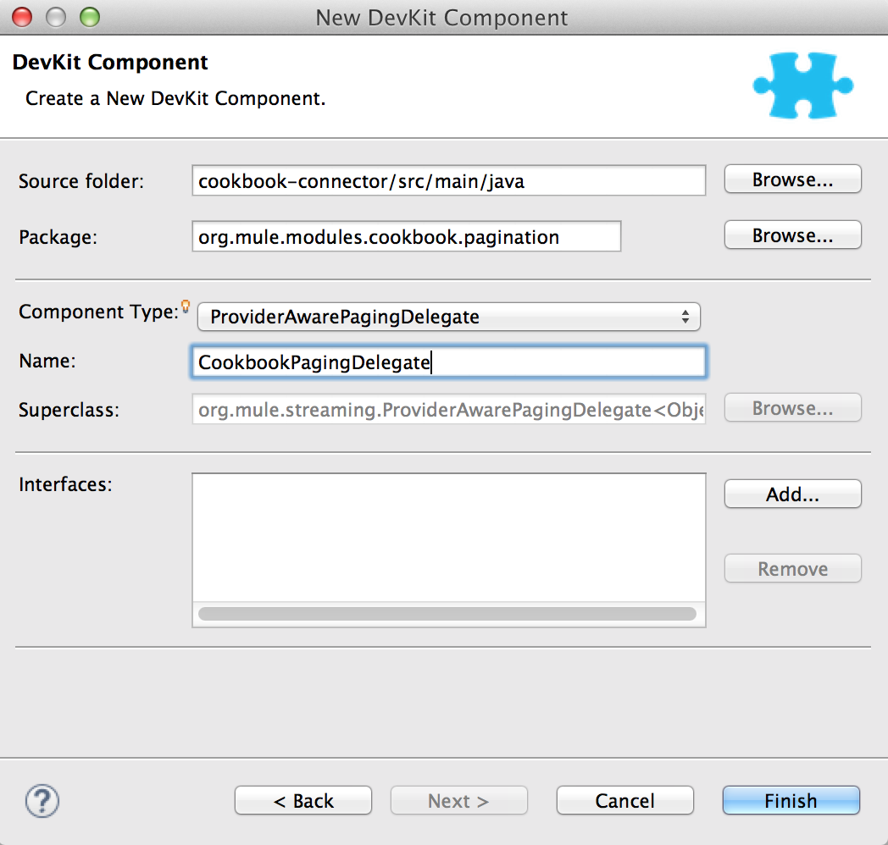
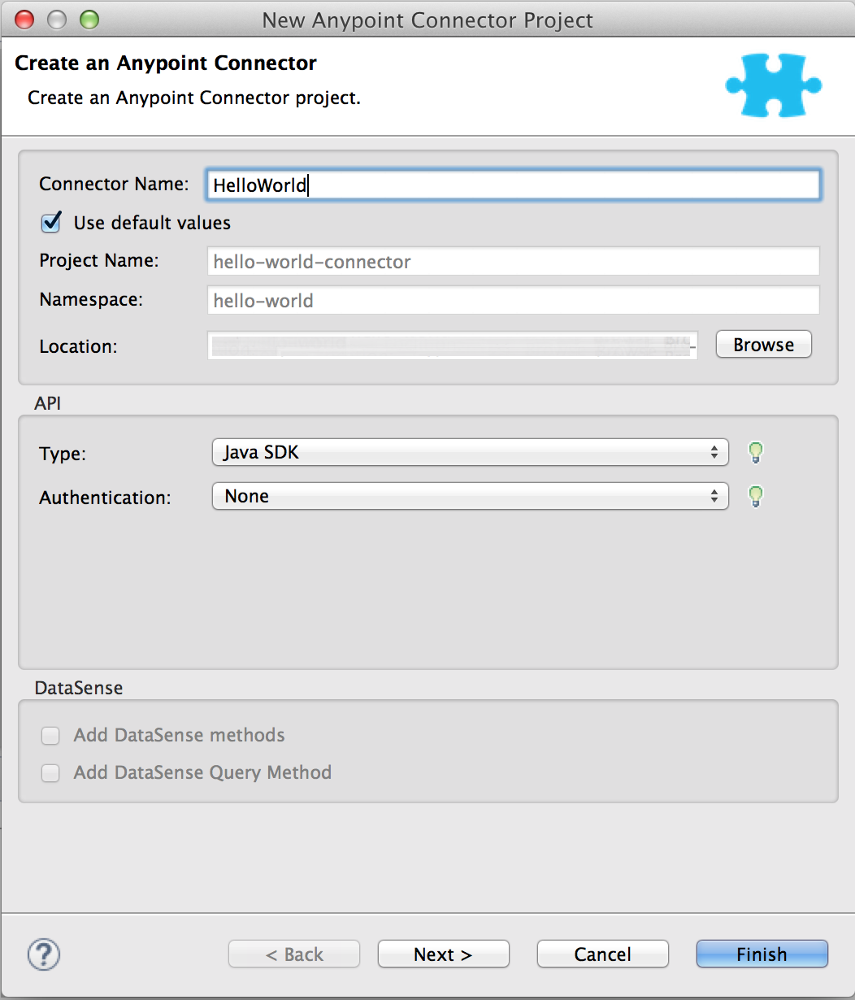

DevKit Tutorial
Features in Tutorial
In this tutorial you will learn how to create a connector, using the DevKit, that users can interact with in Mule and Anypoint Studio.
As you move forward you will learn the features that DevKit provides to help you build Mule connectors, and how easy it can be to extend Mule.
What is DevKit?
The Anypoint Connector DevKit[DevKit] is an important part of the Anypoint Platform. The DevKit is a Maven-based tool that lets you build reusable components that not only can be run as part of a Mule application, but also can be easily configured and consumed from Anypoint Studio.
When to Use DevKit
Here are several scenarios in which you may want to build your own connector:
-
You need to consume an API in one or more applications and you want to make sure everyone uses the same component.
-
You have an API and want to add strategic value to your business by providing a connector and telling the world "I am part of Mule Platform".
-
You want to facilitate integration with SaaS and on-premise Web services, applications, and data sources.
-
The API you consume supports Pagination, Batch, and/or has a SQL capability.
-
The API you consume has different entity types and/or its structure can change.
-
You want to extend Mule core.
What is a Connector?
A MuleSoft connector is a reusable component that interacts with Mule ESB and Anypoint Studio. A connector enables Mule flows to communicate with a target resource. The connector conveys data between a resource and a Mule flow, and transforms the data into a Mule Message.
Using Anypoint Connector DevKit, a connector abstracts developers from the Mule interfaces that are required to run the connector in the Mule platform, and generates a user interface.
A connector also abstracts users from the complexity of initializing required elements such as connecting to a sandbox. A well-developed connector makes Mule apps much simpler for users by handling internal tasks like pagination, session expirations, and input and output metadata. This tutorial shows you how to create a well-developed connector.
Prerequisites
To develop a connector you should have a working knowledge of Mule, Anypoint Studio, and Java development in general, specifically the use of Java annotations.
DevKits functionality is to expose to connector developers Java annotations that generate code and files to interact with Mule, and Anypoint Studio. The generated code provides the interface between the connector and Mule that would otherwise require each connector developer to include extensive boilerplate code, as well as the code and files required to interact with your connector in Anypoint Studio.
You can develop a connector using Windows, Mac, or Linux.
For information on setup and DevKit, see Setting Up Your Development Environment and Anypoint Connector DevKit.
Import the Cookbook
To import the cookbook tutorial from Git:
-
Clone tutorial repository into your local machine. For example, to clone to a dev folder, run:
cd ~/dev git clone https://github.com/mulesoft/mule-cookbook.git -
In the cloned directory, run:
cd ~/dev/mule-cookbook mvn install eclipse:eclipse -
When done, in Anypoint Studio, import the root project as an existing project with the File > Import > General > Existing Projects into Workspace commands.
Cookbook Description
The "Cookbook" was created as a web service to help users organize ingredients and recipes, so that they can easily find recipes for the foods they like to prepare.
API Description
This API allows users to use the create, read, update, and delete (CRUD) operations for single and multiple recipes and ingredients. The API also allows you to view recently added recipes.
Authentication
This connector supports the following authentication types:
-
Custom authentication with a username and password that provides a token to send with each request as part of the request.
Connecting to the Service
The web service is available online.
-
To consume the SOAP version and the SDK just make the request to the address: http://devkit-cookbook.cloudhub.io/soap
-
The rest base url is http://devkit-cookbook.cloudhub.io/rest
-
The OAuth Authorize url is /oauth/authorize
-
The Access Token url is /oauth/accessToken
-
|
You can also run it locally since we provide the source code for the servers already ready to start. The local SOAP Server can be run from the soap-server project by simply executing the com.cookbook.tutorial.service.MuleStoreServer class. By default it starts the server on address http://localhost:9090/cook-book The local Rest Server can be run from the rest-server project by simple executing the com.cookbook.tutorial.Main class. By default it starts the server on address http://localhost/9091 |
Getting started
To build a basic connector for the Cookbook service, we need to perform the following steps:
-
Create a Connector Project.
-
Add the dependency that contains the client we will use to connect to the service.
-
Add a configurable URL so that users can specify the URL where the service is hosted.
-
Add an operation that users can consume in Anypoint Studio.
Create the Cookbook Connector
-
In Anypoint Studio, click File > New > Anypoint Connector Project or right-click your project name in Package Explorer and click New > Anypoint Connector Project:

-
Select the Connector Type you want to create. In this case, select SDK Based:
-
Specify the name of your connector and dont forget to uncheck the default generation before clicking Finish:
This generates a project containing the structure and all required elements including a skeleton connector, images, sample docs file, but no basic tests for your connector.
You can customize the icons by replacing the generated ones. Just make sure that they have the same size so that they look good in Studio.
You can enable the DevKit view by clicking from the top bar Window > Show view > Other, and look for DevKit in the list.
 Figure 1. DevKit View shows a compact view of the connector.
Figure 1. DevKit View shows a compact view of the connector.You can check a detailed explanation of the relation between connector structure and Studio.
{kind=link}
When consuming a service, you may need to configure different values to establish a connection.
To solve this, DevKit provides a pair of annotations that let you modularize in different classes:
-
The behavior you expose to users, using the @Connector annotation.
-
Code related to the connection/configuration is injected into your @Config annotated field. There are several types of configuration you can use as we will see in this tutorial.
|
When you mark a field with @Config, DevKit ensures that you have an initialized object set when the Mule app runs and that requests are made to your connector. |
Adding Dependencies
Lets start coding by creating a connector that allows you to get the recently added elements.
Since we dont need any kind of authentication to consume the recently added recipes, this is the best operation we can use to start learning how to build our connector.
-
Add our client dependency so that we can use it in our connector. This way we can use the Java API built to connect to the Cookbook.
In your pom.xml file add:
<dependencies> <dependency> <groupId>com.cookbook.tutorial</groupId> <artifactId>sdk-client</artifactId> <version>1.0.0-SNAPSHOT</version> </dependency> </dependencies>
Adding @Configurable Fields
On the @Configuration ConnectorConfig add a configurable field for the address where the Cookbook service is hosted:
-
Type conf at the editor of your connector config and use Ctrl+Space to display the templates.

-
Add a configurable field in our @Configuration component with a default value for the endpoint our client connects to so that users can connect to different sandboxes.
-
Create the a setter and a getter, since all @Configurable items must have getters and setters.
See full Config source code.
Initialize the Client
-
On your @Connector marked class use the @Start annotation on a method to initialize the client.
private MuleCookBookClient client; @Start public void initialize() { client = new MuleCookBookClient(config.getAddress()); }Anypoint connectors can be fully aware of Mules lifecycle without implementing any Mule-specific interface.
There is an annotation method for each of the four phases of the lifecycle.
When a method is annotated with one of these annotations, DevKit invokes it during the lifecycle phase that the annotation represents.
Adding @Processor Methods
-
Remove the dummy operation the connector has.
-
To add a processor simply type proc at the editor and use Ctrl+Space to display the templates and pick the simple processor.

-
Change it to reflect the getRecentlyAdded method signature, and there we have our first connector, ready to be tested.
-
Run the Generate Sources Action.
See full Connector source code.
At this point you can install this Connector and try it in Studio if you want.
|
As you modify your connector, you may start seeing error markers on the generated folder. Just ignore them. Once you regenerate the sources, the errors will go away as the generated code will be refreshed. |
Adding Samples to Your Connector
Lets now add the example for it.
Create the file pointed by the {@sample } if it doesnt exists already
Note: When you add an example, use the same name as the name that narrows the example in the file. Inside of it you have to put an example of the @Processor.
If you have the Javadoc check enabled, DevKit plugin marks the missing example as an error and provide a quick fix for us to easily add the example.
Otherwise, open the file and type < at the editor and use Ctrl+Space to display the templates and pick the one that best suite our operation.

Our example in this case looks like this:
<!-- BEGIN_INCLUDE(cook-book:getRecentlyAdded) -->
<cook-book:get-recently-added/>
<!-- END_INCLUDE(cook-book:getRecentlyAdded) -->Using the Connector in Mule
You will do a very simple app that listens to an HTTP endpoint and when we hit it, it will retrieve the list of recently added elements.
-
Create a mule app and add a simple http listener. If this is your first mule app, take a look at our Hello World Application.
-
Drag and drop the Connector, and configure it.
-
Drag and drop an Object to JSON transformer and run the app.
<?xml version="1.0" encoding="UTF-8"?>
<mule xmlns:cookbook="http://www.mulesoft.org/schema/mule/cookbook" xmlns:json="http://www.mulesoft.org/schema/mule/json" xmlns:http="http://www.mulesoft.org/schema/mule/http" xmlns="http://www.mulesoft.org/schema/mule/core" xmlns:doc="http://www.mulesoft.org/schema/mule/documentation"
xmlns:spring="http://www.springframework.org/schema/beans" version="EE-3.6.1"
xmlns:xsi="http://www.w3.org/2001/XMLSchema-instance"
xsi:schemaLocation="http://www.springframework.org/schema/beans http://www.springframework.org/schema/beans/spring-beans-current.xsd http://www.mulesoft.org/schema/mule/core http://www.mulesoft.org/schema/mule/core/current/mule.xsd http://www.mulesoft.org/schema/mule/http http://www.mulesoft.org/schema/mule/http/current/mule-http.xsd http://www.mulesoft.org/schema/mule/json http://www.mulesoft.org/schema/mule/json/current/mule-json.xsd http://www.mulesoft.org/schema/mule/cookbook http://www.mulesoft.org/schema/mule/cookbook/current/mule-cookbook.xsd">
<http:listener-config name="HTTP_Listener_Configuration" host="0.0.0.0" port="8081" doc:name="HTTP Listener Configuration"/>
<cookbook:config name="Cookbook__Configuration" doc:name="Cookbook: Configuration"/>
<flow name="mule-appFlow">
<http:listener config-ref="HTTP_Listener_Configuration" path="/get-recently" doc:name="HTTP"/>
<cookbook:get-recently-added config-ref="Cookbook__Configuration" doc:name="Cookbook"/>
<json:object-to-json-transformer doc:name="Object to JSON"/>
</flow>
</mule>If you hit the url http://localhost:8081/get-recently you will see a reply similar to:
[
{
"created":1428678371866,
"id":2,
"lastModified":null,
"name":"Baked Apples",
"cookTime":20.0,
"directions":[
"Cut the Apples",
"Put them in the oven",
"Remove from the oven after 20.0 minutes"
],
"ingredients":[
{
"created":1428678371866,
"id":1,
"lastModified":null,
"name":"Apple",
"quantity":0.0,
"unit":"UNIT"
}
],
"prepTime":30.0
}
]If you want to know how to create tests for your connector check:
-
Tests Automation documentation.
-
The full testing documentation.
Adding Connection Management
Unlike the getRecentlyAdded call doesnt require authentication, all other operations require that you set a token on each request.
The client you are using provides a login call that initializes the token and uses it in subsequent requests.
|
Take into account that the session can expire and cause the connector to make a login request again. |
DevKit provides a different set of annotations to keep your code clean and handle the connection in a different class for delegating responsibilities.
To implement @ConnectionManagement, you need to move the initialization to @ConnectionManagement, instead of using the @Start annotation as we did before.
-
In the ConnectorConfig change the @Configuration for a @ConnectionManagement annotation
@ConnectionManagement(friendlyName = "Configuration") -
Add the MuleCookbookClient to the ConnectorConfig and add a getter and getter.
private MuleCookBookClient client; public MuleCookBookClient getClient() { return client; } public void setClient(MuleCookBookClient client) { this.client = client; } -
Implement these four methods as shown in the code sample that follows:
-
@Connect - Initialize the client, and if you dont have a login, call the API to verify.
@Connect @TestConnectivity public void connect(@ConnectionKey String username, @Password String password) throws ConnectionException { setClient(new MuleCookBookClient(getAddress())); try { getClient().login(username, password); } catch (InvalidCredentialsException e) { throw new ConnectionException(ConnectionExceptionCode.INCORRECT_CREDENTIALS, e.getMessage(), "Invalid credentials"); } } -
@Disconnect - Release any connection if required.
@Disconnect public void disconnect() { setClient(null); } -
@ValidateConnection - Check that your connection is alive.
@ValidateConnection public boolean isConnected() { return getClient() != null; } -
@ConnectionIdentifier - Return a string value. This will only be used when debugging.
@ConnectionIdentifier public String connectionId() { return "001"; }
-
-
Remove the MuleCookBookClient from the CookbookConnector and the @Start method
-
On our @Processor use the client provided by the ConnectorConfig
@Processor public List<Recipe> getRecentlyAdded() { return config.getClient().getRecentlyAdded(); }
See:
If you install this version and try to run the mule app we created before, you will see that it fails with a SAXParseException because we need to add a username and password to our configuration.
Just open the global configuration of your connector and check that there are 2 new fields, username and password. Configure them and you can run the app again.

This is the mule updated xml:
<?xml version="1.0" encoding="UTF-8"?>
<mule xmlns:cookbook="http://www.mulesoft.org/schema/mule/cookbook" xmlns:json="http://www.mulesoft.org/schema/mule/json" xmlns:http="http://www.mulesoft.org/schema/mule/http" xmlns="http://www.mulesoft.org/schema/mule/core" xmlns:doc="http://www.mulesoft.org/schema/mule/documentation"
xmlns:spring="http://www.springframework.org/schema/beans" version="EE-3.6.1"
xmlns:xsi="http://www.w3.org/2001/XMLSchema-instance"
xsi:schemaLocation="http://www.springframework.org/schema/beans http://www.springframework.org/schema/beans/spring-beans-current.xsd http://www.mulesoft.org/schema/mule/core http://www.mulesoft.org/schema/mule/core/current/mule.xsd http://www.mulesoft.org/schema/mule/http http://www.mulesoft.org/schema/mule/http/current/mule-http.xsd http://www.mulesoft.org/schema/mule/json http://www.mulesoft.org/schema/mule/json/current/mule-json.xsd http://www.mulesoft.org/schema/mule/cookbook http://www.mulesoft.org/schema/mule/cookbook/current/mule-cookbook.xsd">
<http:listener-config name="HTTP_Listener_Configuration" host="0.0.0.0" port="8081" doc:name="HTTP Listener Configuration"/>
<cookbook:config name="Cookbook__Configuration" doc:name="Cookbook: Configuration type config" password="admin" username="admin"/>
<flow name="mule-appFlow">
<http:listener config-ref="HTTP_Listener_Configuration" path="/get-recently" doc:name="HTTP"/>
<cookbook:get-recently-added config-ref="Cookbook__Configuration" doc:name="Cookbook"/>
<json:object-to-json-transformer doc:name="Object to JSON"/>
</flow>
</mule>See:
-
Check the Test Connectivity section.
-
Authentication[DevKit Authentication] documentation.
Improving Error Handling
This section explains how to improve exception handling and reconnecting.
Exception Handling with @Handler
The @Handler feature, is very useful when you want to avoid duplicated code when handling exceptions, and also so that your connector code is cleaner.
When handling messages retrieved from the API, if the message is poor and you know how to improve it, you can use this mechanism, to enrich the error provided to the user.
To see how it works, lets create a handler for the InvalidEntityException thrown by the create() call of the Cookbook SDK.
-
Create a new Anypoint Connector Component by doing a right click and selecting the wizard.

-
Select the package, component type and class name and click on Finish.
-
Improve the error message when InvalidEntityException is thrown.
@Handle public void handleException(Exception ex) throws Exception { if (ex instanceof InvalidEntityException) { throw new RuntimeException("You cannot provide an Id when creating an Ingredient"); } else { // Just let it go throw ex; } }Check the full source code.
-
Add a new processor to create Ingredients
@Processor @OnException(handler = CookbookHandler.class) public Ingredient createIngredient(@Default("#[payload]") Ingredient Ingredient) throws InvalidEntityException, SessionExpiredException { return (Ingredient) config.getClient().create(Ingredient); }Check the full source code.
Handling Session Expiration
There is no need for users to add custom code in their Mule apps to handle session expiration. DevKit provides a mechanism to do this in a clean way.
Just annotate your @Processor method with the @ReconnectOn exception.
@Processor
@OnException(handler = CookbookHandler.class)
@ReconnectOn(exceptions = { SessionExpiredException.class })
public Ingredient createIngredient(@Default("#[payload]") Ingredient Ingredient) throws InvalidEntityException, SessionExpiredException {
return (Ingredient) config.getClient().create(Ingredient);
}Check the full source code.
In our Mule app, you can configure a reconnection strategy so that our Mule app is ready to handle session expirations.
Global Config dialog configuration:
The XML generated looks like:
<cookbook:config-type doc:name="config" name="config" password="admin" username="admin">
<reconnect/>
</cookbook:config-type>Adding DataSense
What is it?
DataSense improves the user experience at design time when creating Mule applications by enabling your connector to determine the API of your target resource.
Even though DataSense is optional, its use enables connector users to acquire metadata of the entities in a service.
See:
In this tutorial, we use a static DataSense model, which means that the entities are fixed and known upfront, and do not change. The fields that this model supports are also fixed.
Using DataSense
To use DataSense in the cookbook:
-
Analyze the entities in {mule} service. We only have two simple entities, Recipe and Ingredient that both extend from CookBookEntity.
-
Look at how our createIngredient operation looks inside Anypoint Studio, and how it interacts with other components.
@Processor @OnException(handler = CookbookHandler.class) @ReconnectOn(exceptions = { SessionExpiredException.class }) public Ingredient createIngredient(@Default("#[payload]") Ingredient Ingredient) throws InvalidEntityException, SessionExpiredException { return (Ingredient) config.getClient().create(Ingredient); }
Handling Ingredients
We defined the operation so that it receives an Ingredient, and it returns an Ingredient with the extra fields populated from the server.
Lets handle the ingredients:
-
Check the input metadata to see that the expected output is a POJO, with the expected fields our Ingredient has:

-
Verify that the output metadata is expected:

-
Drag and drop a {dataWeave} either behind or after our connector. The {dataWeave} automatically picks the input or output:
Figure 2. Transform Message Receiving Connector OutputBecause DevKit auto-generates static metadata, DevKit automatically ensures that your connector knows how to propagate metadata information.
Handling Recipes
We dont have just Ingredients, we also have Recipes, so we dont want one method for each entity we have in our model.
Modify your connector to just work with the CookBookEntity class:
-
Create an operation:
@Processor @OnException (handler=CookbookHandler.class) @ReconnectOn(exceptions = { SessionExpiredException.class }) public CookBookEntity create(@Default("#[payload]") @RefOnly CookBookEntity entity) throws InvalidEntityException, SessionExpiredException { return config.getClient().create(entity); } -
The @RefOnly annotation is used to tell DevKit that the input can only be specified as a reference (due to a DevKit limitations on handling Abstract classes).
Lets see how this affects the UI and user experience.
Studio, can no longer determine input or output type:
Figure 3. Connector Input with @RefOnly Figure 4. Connector Output with Abstract Class
Figure 4. Connector Output with Abstract Class
In the next section we get back our DataSense-friendly user experience.
The full source code of our connector with a create, update, get and delete operation is available here.
Implementing a MetaDataCategory
To implement DataSense using a @MetaDataCategory, you need to separate your implementation in two steps, retrieving the keys and describing the keys.
-
Use the Anypoint DevKit Component wizard to create a new MetaDataCategory

-
Modify the method annotate with @MetaDataKeyRetriever to retrieve two keys, one for Recipe and another for Ingredient.
@MetaDataKeyRetriever public List<MetaDataKey> getMetaDataKeys() throws Exception { List<MetaDataKey> keys = new ArrayList<MetaDataKey>(); // Generate the keys keys.add(new DefaultMetaDataKey("id1", "Ingredient")); keys.add(new DefaultMetaDataKey("id2", "Recipe")); return keys; } -
Modify the method annotate with @MetaDataRetriever, to retrieve the description. Because we use a static model, we can just create a POJO model:
@MetaDataRetriever public MetaData getMetaData(MetaDataKey key) throws Exception { DefaultMetaDataBuilder builder = new DefaultMetaDataBuilder(); // Since our model is static and we can simply create the pojo model. PojoMetaDataBuilder<?> pojoObject = null; if ("id1".equals(key.getId())) { pojoObject = builder.createPojo(Ingredient.class); } else if ("id2".equals(key.getId())) { pojoObject = builder.createPojo(Recipe.class); } else { throw new RuntimeException("Invalid key:" + key.getId()); } MetaDataModel model = pojoObject.build(); MetaData metaData = new DefaultMetaData(model); return metaData; }Check the full source code.
To use this in our connector, modify our @Processors so that a user can pick the entities.
-
Annotate our @Connector class with the @MetaDataScope annotation. This sets the default MetaDataCategory thats used every time users choose a @Processor that has a @MetaDataKeyParam.
@Connector(name = "cookbook", friendlyName = "Cookbook") @MetaDataScope(DataSenseResolver.class) public class CookbookConnector { -
To describe input and output, add a String annotated with @MetaDataKeyParam, and specify that it affects input and output by adding the affects=MetaDataKeyParamAffectsType.BOTH :
@Processor @OnException(handler = CookbookHandler.class) @ReconnectOn(exceptions = { SessionExpiredException.class }) public CookBookEntity create(@MetaDataKeyParam(affects = MetaDataKeyParamAffectsType.BOTH) String type, @Default("#[payload]") @RefOnly CookBookEntity entity) throws InvalidEntityException, SessionExpiredException { return config.getClient().create(entity); } -
In your get operation you need specify that the affect only applies to the output so we modify it just a little:
@Processor @OnException(handler = CookbookHandler.class) @ReconnectOn(exceptions = { SessionExpiredException.class }) public CookBookEntity get(@MetaDataKeyParam(affects = MetaDataKeyParamAffectsType.OUTPUT) String type, @Default("1") Integer id) throws InvalidEntityException, SessionExpiredException, NoSuchEntityException { return config.getClient().get(id); } -
Check our new connector looks in Studio. We have a combo after we select the entity type and save it. This automatically refreshes our metadata.
Now even the {dataWeave} knows how to interact with our @Connector:
View connector full source code here.
Dynamic DataSense
In the previous section we covered the scenario when your model is static. Lets take a look into a much more complex scenario.
There are APIs that provide a way to get entity definitions dynamically. Salesforce, NetSuite are just some examples of these.
In our case, our Cookbook provides an operation that describes our entities, so lets use that instead to get the entities and structure:
-
Get the supported entities, and generate a key that we can use later:
@MetaDataKeyRetriever public List<MetaDataKey> getMetaDataKeys() throws Exception { List<MetaDataKey> keys = new ArrayList<MetaDataKey>(); List<CookBookEntity> entities = getConnector().getConfig() .getClient().getEntities(); // Generate the keys for (CookBookEntity entity : entities) { keys.add(new DefaultMetaDataKey(entity.getClass().getName() + "#" + entity.getId(), entity.getName())); } return keys; } -
Use a structure that we can dynamically modify, and the way to do this in Mule is by using a Map<String,Object> as parameters and/or return types of our connector.
Mule provides a builder that helps us generate the MetaData for the entities.
@MetaDataRetriever public MetaData getMetaData(MetaDataKey key) throws Exception { DefaultMetaDataBuilder builder = new DefaultMetaDataBuilder(); // Since our model is static and we can simply create the pojo model. String[] keyParts = key.getId().split("#"); if (keyParts.length != 2) { throw new RuntimeException( "Invalid key. Format should be 'entityType#id'"); } Integer id = Integer.valueOf(keyParts[1]); CookBookEntity entity = (CookBookEntity) Class.forName(keyParts[0]) .newInstance(); entity.setId(id); Description description = getConnector().getConfig().getClient() .describeEntity(entity); DynamicObjectBuilder<?> dynamicObject = builder.createDynamicObject(key .getId()); for (Description fields : description.getInnerFields()) { addFields(fields, dynamicObject); } MetaDataModel model = builder.build(); MetaData metaData = new DefaultMetaData(model); return metaData; } -
Check the full source code.
-
In our @Connector now we need to add the code to generate the entities from the Map, and return Map in all our operations. Why is this important? To maintain consistency in our API.
This is how our new Create looks like:
Unresolved directive in devkit-tutorial.adoc - include::resources/java/v6/CookBookConnector.java[lines=73..88]Note that now the UI is a different form before, because the input is now a map.

-
In our Mule app, we cannot update the metadata and use our connector. And, as you can see, note that we have a map structure instead of a POJO:

To see how to test DataSense check our Testing DataSense guide.
Adding Pagination
Implement Pagination
In order to show this feature you are going to add a processor that will call the searchWithQuery operation of the SDK.
You need to do 3 things in order to have a paginated operation:
@Processor
@ReconnectOn(exceptions = { SessionExpiredException.class })
@Paged (1)
public ProviderAwarePagingDelegate<Map<String, Object>, CookbookConnector> queryPaginated( (2)
final String query, final PagingConfiguration pagingConfiguration) (3)
throws SessionExpiredException {
return new CookbookPagingDelegate(query, pagingConfiguration.getFetchSize());
}| 1 | Annotated your processor with @Paged. |
| 2 | Return a ProviderAwarePagingDelegate |
| 3 | Receive as one of your parameters a PagingConfiguration |
When implementing your ProviderAwarePagingDelegate you need to specify two elements:
-
The type of the list you will return in each page. In your case a Map<String,Object>
-
The type of the Connector.
To create it use the Anypoint DevKit Component wizard and:
-
Specify the package were you want to create it. In this example org.mule.cookbook.pagination
-
Specify you want to create a ProviderAwarePagingDelegate.
-
Set the class name as CookbookPagingDelegate

After that you just need to implement the methods required for you to handle the new page request.
You can find the full source code of the CookbookPagingDelegate.
| If you have a reconnection strategy, DevKit will automatically reconnect and retry to get a page. It is important that you handle the state of your PagingDelegate to make sure you retry the last page that was not retrieved. |
See:
-
Adding Query Pagination Support[Adding Pagination Support].
Using Pagination In Your Mule App
You can for example use a foreach in front of your paged processor:

<?xml version="1.0" encoding="UTF-8"?>
<mule xmlns:json="http://www.mulesoft.org/schema/mule/json" xmlns:cookbook="http://www.mulesoft.org/schema/mule/cookbook" xmlns:http="http://www.mulesoft.org/schema/mule/http" xmlns="http://www.mulesoft.org/schema/mule/core" xmlns:doc="http://www.mulesoft.org/schema/mule/documentation"
xmlns:spring="http://www.springframework.org/schema/beans" version="EE-3.6.1"
xmlns:xsi="http://www.w3.org/2001/XMLSchema-instance"
xsi:schemaLocation="http://www.springframework.org/schema/beans http://www.springframework.org/schema/beans/spring-beans-current.xsd http://www.mulesoft.org/schema/mule/core http://www.mulesoft.org/schema/mule/core/current/mule.xsd http://www.mulesoft.org/schema/mule/http http://www.mulesoft.org/schema/mule/http/current/mule-http.xsd http://www.mulesoft.org/schema/mule/cookbook http://www.mulesoft.org/schema/mule/cookbook/current/mule-cookbook.xsd http://www.mulesoft.org/schema/mule/json http://www.mulesoft.org/schema/mule/json/current/mule-json.xsd">
<cookbook:config name="CookBook__Connection_Managament_Config" username="admin" password="admin" doc:name="CookBook: Connection Managament Config">
<reconnect/>
</cookbook:config>
<http:listener-config name="HTTP_Listener_Configuration" host="0.0.0.0" port="8081" doc:name="HTTP Listener Configuration"/>
<flow name="mule-appFlow1">
<http:listener config-ref="HTTP_Listener_Configuration" path="/page" doc:name="HTTP"/>
<cookbook:query-paginated config-ref="CookBook__Connection_Managament_Config" query="GET ALL FROM INGREDIENT" fetchSize="5" doc:name="CookBook"/>
<foreach doc:name="For Each">
<logger message="#[payload]" level="INFO" doc:name="Logger"/>
</foreach>
<set-payload value="Finished Processing" doc:name="Set Payload"/>
</flow>
</mule>Installing a Connector
Using the Anypoint DevKit plugin
Installing the connector is basically the same as installing any Eclipse plugin.
To install your connector from the DevKit plugin:
-
Right-click your project name in Package Explorer, and click Anypoint Connector > Install Or Update.

This triggers the DevKit Maven build tool, which generates an update site folder.
The files will be copied under the dropins folder located in the same directory as the AnypointStudio executable, and installed without the need of rebooting your AnypointStudio.
-
You can now use your connector in a Mule app.

|
To uninstall the connectors you can either use the shortcut from the UI or remove the folder from the dropins directory and reboot your AnypointStudio 
|
Installing from an UpdateSite
Connectors can be installed manually by selecting the update site generated by DevKit:
-
Open a command prompt or terminal and change directory to where the pom.xml file is for your project (in the Eclipse workspace).
-
Run mvn clean package.
-
Click Help > Install New Software.

-
Click Add and in the new dialog look for the folder.
-
Click the UpdateSite file, generated under your projects target folder.
You can either select the zip file named UpdateSite.zip or the folder update-site.
A popup will open showing the task that is performed.
-
Review the installation and update items, and accept the license agreement.
-
Click Finish and restart Studio for the changes to be recognized.
JAR files are not signed during this run, so you will see a popup. 
-
You can now use your connector in a Mule app.
Updating a Connector
To update your connector you can repeat the steps made for installing it.
AnypointStudio will detect it is an update and perform the corresponding actions.
Debugging Your Connector
After successfully installing your connector, you can start using your connector in a Mule application. You can add breakpoints in the source code of the connector to debug it. If your connector is a Community connector, the source code ships automatically in the installed connector. If your connector is an Enterprise, you need to manually attach the source code of your JAR.
| To correctly debug your code, take into account that the Mule app you are running is using the latest installed version, so if you make changes, and you want to debug the Mule app, you need to re-install the connector. |
Debugging your connector when running your test is as simple as debugging any Java class.
You just need to set a breakpoint in your connector code.
Sharing My Connector
Connector, as a component that can be installed in Anypoint Studio, is an Update Site.
Update Sites are used to organize and export features so they can be installed into Eclipse applications.
When the site is built, the included features (along with all plug-ins part of those features) will be exported into an installable form. The exported plug-ins and features will be put into two folders "plug-ins" and "features". Two other files, "content.xml" and "artifacts.xml" will also be generated and contain metadata for the exported files that make installing easier. These files, along with "site.xml", collectively form an Eclipse update site. To make the update site available to others you must make all these files available in a shared directory or web site.
When building a connector, DevKit generates this for you, so that you dont need to worry about generating it yourself.
You can use the Anypoint DevKit plugin to either install the connector on your current Studio, or export it as an update-site for others to use.
Miscellaneous
Connector Structure
In order to see how all the components are related, lets create a Hello World connector:
-
In Anypoint Studio, click File > New > Anypoint Connector Project or right-click your project name in Package Explorer and click New > Anypoint Connector Project:
-
Select the Connector Type you want to create. In this case, select SDK Based:
-
Specify the name of your connector and click Finish:
This generates a project containing the structure and all required elements including a skeleton connector, images, sample docs, and basic tests for your connector.
-
Enable the DevKit view by clicking from the top bar Window > Show view > Other, and look for DevKit in the list.
Your connector initially consists of message processors and user interface elements. Users can configure the UI elements in Anypoint Studio.
The DevKit makes it easy to install a connector in Studio. After you install it in Studio, users can search for your connector and drag it into a Mule flow.
Installing only requires right-clicking the name of the connector in Studios Package Explorer, and clicking Anypoint Connector > Install or Update, completing the prompts, and restarting Studio, as you can see at the install section. You can install at any time during coding. You can even install the starting skeleton connector.
Lets check the structure of the skeleton connector.
In this image you can see how most of the code maps into UI elements.

In this example, you can check how the code matches to XML and other UI elements.
{kind=link}
|
@Config annotation is deprecated. Users instead should use @Config. On this views, consider the Config as the ConnectorConfig |
Configurable and Parameter Modifiers
@Optional Parameters
Optional parameters or configurable ones are elements that are not required, and therefore, there is no need for users to specify a value.
You can specify configurable fields inside you Connector Configuration classes, or as parameters of @Processor methods inside a @Connector.
import org.mule.api.annotations.Configurable;
import org.mule.api.annotations.Processor;
import org.mule.api.annotations.param.Optional;
//Inside the Configuration class
/** * Optional Field documentation */
@Configurable
@Optional
private String optionalField;
//Getter and Setter of the field are required
//Inside your @Connector
/** * Optional parameter */
@Processor
public String sayHi(String firstName,@Optional String lastName ) {
return "Hi "+firstName+" "+((lastName==null) ? "":lastName);
}@Default
When you want an optional parameter or configurable you can avoid the use of @Optional and just use the @Default annotation.
import org.mule.api.annotations.Configurable;
import org.mule.api.annotations.Processor;
import org.mule.api.annotations.param.Default;
//Inside the Configuration class
/** * Field with Default */
@Configurable
@Default("Hi")
private String greeting;
//Getter and Setter of the field are required
//Inside your @Connector
/** * Default parameter */
@Processor
public String sayHi(String firstName,@Default("Unknown") String lastName ) {
return greeting+" "+firstName+" "+lastName;
}Another very important use of the @Default annotation is when building a connector that has DataSense.
Adding OAuthV2
The Server can also provide the token using OAuth 2.0, instead of doing a login request.
In order to use OAuth in you connector you just need to annotate your strategy with the @OAuth2 annotation.
If you only had the OAuth2 Configuration your Config would look like:
1
2
3
4
5
6
7
8
9
10
11
12
13
14
15
16
17
18
19
20
21
22
23
24
25
26
27
28
29
30
31
32
33
34
35
36
37
38
39
40
41
42
43
44
45
46
47
48
49
50
51
52
53
54
55
56
57
58
59
60
61
62
63
64
65
66
67
68
69
70
71
72
73
74
75
76
77
78
package org.mule.modules.cookbook.config;
import org.mule.api.annotations.Configurable;
import org.mule.api.annotations.oauth.*;
import org.mule.api.annotations.param.Default;
import com.cookbook.tutorial.client.MuleCookBookClient;
@OAuth2(configElementName = "oauth2", friendlyName = "OAuth 2.0", authorizationUrl = "http://devkit-cookbook.cloudhub.io/rest/oauth/authorize", accessTokenUrl = "http://devkit-cookbook.cloudhub.io/rest/oauth/accessToken")
public class OAuthConfig {
private MuleCookBookClient client;
@OAuthAccessToken
private String accessToken;
@Configurable
@OAuthConsumerKey
private String consumerKey;
@Configurable
@OAuthConsumerSecret
private String consumerSecret;
/**
* URL used to connect to the service
*/
@Configurable
@Default("http://devkit-cookbook.cloudhub.io/soap")
private String address;
@OAuthPostAuthorization
public void postAuthorize() {
setClient(new MuleCookBookClient(getAddress()));
getClient().setToken(getAccessToken());
}
public void setAccessToken(String accessToken) {
this.accessToken = accessToken;
}
public String getAccessToken() {
return this.accessToken;
}
public void setConsumerKey(String consumerKey) {
this.consumerKey = consumerKey;
}
public String getConsumerKey() {
return this.consumerKey;
}
public void setConsumerSecret(String consumerSecret) {
this.consumerSecret = consumerSecret;
}
public String getConsumerSecret() {
return this.consumerSecret;
}
public MuleCookBookClient getClient() {
return client;
}
public void setClient(MuleCookBookClient client) {
this.client = client;
}
public String getAddress() {
return address;
}
public void setAddress(String address) {
this.address = address;
}
}
All our operations now need to be marked with the @OAuthProtected, even our @Source.
In our Connector for example you will see:
Unresolved directive in devkit-tutorial.adoc - include::resources/java/v9/CookBookConnector.java[lines="113..129"]Check full source code.
See:
-
Authentication documentation.
Multiple Configuration
If you want to have multiple connection configurations there are two things to take into account:
-
All Configurations either need to implement the same interface or have a common parent class.
-
The connector Config field needs to be declared either as the interface or as the common parent class.
If your configuration has common fields, they can be defined at a parent class.
In our connector, after the refactor the classes would look like this:

See:
-
Connector source code.
-
Base Config source code.
-
Connection Management Config source code.
-
OAuth2 Config source code.
Adding @Source
What is a Source?
In some cases it is necessary to create Message Sources instead of Message Processors.
Basically, a Message Source receives or generates new messages to be processed by Mule. One of the use cases for a Message Source is implementing Streaming APIs. The @Source annotation marks a method inside a @Connector annotated class as callable from a Mule flow and capable of generating Mule events. Each marked method will have a Message Source generated. The method must receive a SourceCallback as one of its arguments that represents the next message processor in the chain. It does not matter the order in which this parameter appears as long it is present in the method signature.
Implementing a Message Source
As an example, we are going to use the GetRecentlyAdded method.
-
Inside your @Connector type source and use Ctrl + Space bar to display the templates.

-
Create a @Source that consumes the Get Recently Updated on the Connector using a callback
Unresolved directive in devkit-tutorial.adoc - include::resources/java/v7/CookBookConnector.java[lines=73..90] -
Install this new version
-
On your flow now just drag and drop the Cookbook Connector, and you will see that is automatically while generate a flow.

-
Add a logger and debug to see that the payload now has your recipes.
<?xml version="1.0" encoding="UTF-8"?>
<mule xmlns:tracking="http://www.mulesoft.org/schema/mule/ee/tracking" xmlns:cookbook="http://www.mulesoft.org/schema/mule/cookbook" xmlns:json="http://www.mulesoft.org/schema/mule/json" xmlns="http://www.mulesoft.org/schema/mule/core" xmlns:doc="http://www.mulesoft.org/schema/mule/documentation"
xmlns:spring="http://www.springframework.org/schema/beans" version="EE-3.6.1"
xmlns:xsi="http://www.w3.org/2001/XMLSchema-instance"
xsi:schemaLocation="http://www.springframework.org/schema/beans http://www.springframework.org/schema/beans/spring-beans-current.xsd http://www.mulesoft.org/schema/mule/core http://www.mulesoft.org/schema/mule/core/current/mule.xsd http://www.mulesoft.org/schema/mule/cookbook http://www.mulesoft.org/schema/mule/cookbook/current/mule-cookbook.xsd http://www.mulesoft.org/schema/mule/json http://www.mulesoft.org/schema/mule/json/current/mule-json.xsd http://www.mulesoft.org/schema/mule/ee/tracking http://www.mulesoft.org/schema/mule/ee/tracking/current/mule-tracking-ee.xsd">
<cookbook:config name="CookBook__Connection_Managament_Config" username="admin" password="admin" doc:name="CookBook: Connection Managament Config"/>
<flow name="source-get-recently-added">
<cookbook:get-recently-added-source config-ref="CookBook__Connection_Managament_Config" doc:name="CookBook (Streaming)"/>
<logger message="#[payload]" level="INFO" doc:name="Logger"/>
</flow>
</mule>Adding a Transformer
What is a Transformer?
Transformers convert message payloads to formats expected by their destinations. Mule ESB provides many standard transformers, which users can configure using elements and attributes in a Mule XML configuration file.
Sometimes its useful to build your own custom transformers.
Annotating a method with @Transformer signals the DevKit to export a method functionality as a transformer. You need to declare Transformers in classes annotated with @Module or @Connector and you can declare more than one transformer in a single class. It is possible to declare transformers, message processors, and message sources all in the same class.
An @Transformer annotated method must:
-
Be static
-
Be public
-
Not return void
-
Not return java.lang.Object
-
Receive exactly one argument
-
Be inside a class annotated with @Connector
Creating a Transformer
In our case, we are creating a transformer that converts a List<Recipe> into a List<Map<String,Object>>, that way we dont need to modify our existing operation, and yet we can use the output of it in operations that recieve a List<Map<String,Object>>.
Unresolved directive in devkit-tutorial.adoc - include::resources/java/v6/CookBookConnector.java[lines=163..169]Using Your Transformer in a Mule App
To use your transformer, just drag and drop it from the palette and build a flow.
-
Here we are using it explicitly to map transform the recipes into a Map.
<?xml version="1.0" encoding="UTF-8"?>
<mule xmlns:json="http://www.mulesoft.org/schema/mule/json" xmlns:cookbook="http://www.mulesoft.org/schema/mule/cookbook" xmlns:http="http://www.mulesoft.org/schema/mule/http" xmlns="http://www.mulesoft.org/schema/mule/core" xmlns:doc="http://www.mulesoft.org/schema/mule/documentation"
xmlns:spring="http://www.springframework.org/schema/beans" version="EE-3.6.1"
xmlns:xsi="http://www.w3.org/2001/XMLSchema-instance"
xsi:schemaLocation="http://www.springframework.org/schema/beans http://www.springframework.org/schema/beans/spring-beans-current.xsd http://www.mulesoft.org/schema/mule/core http://www.mulesoft.org/schema/mule/core/current/mule.xsd http://www.mulesoft.org/schema/mule/http http://www.mulesoft.org/schema/mule/http/current/mule-http.xsd http://www.mulesoft.org/schema/mule/cookbook http://www.mulesoft.org/schema/mule/cookbook/current/mule-cookbook.xsd http://www.mulesoft.org/schema/mule/json http://www.mulesoft.org/schema/mule/json/current/mule-json.xsd">
<cookbook:config name="CookBook__Connection_Managament_Config" username="admin" password="admin" doc:name="CookBook: Connection Managament Config">
<reconnect/>
</cookbook:config>
<http:listener-config name="HTTP_Listener_Configuration" host="0.0.0.0" port="8081" doc:name="HTTP Listener Configuration"/>
<flow name="mule-appFlow">
<http:listener config-ref="HTTP_Listener_Configuration" path="/transform" doc:name="HTTP"/>
<cookbook:get-recently-added config-ref="CookBook__Connection_Managament_Config" doc:name="CookBook"/>
<cookbook:recipes-to-maps doc:name="CookBook"/>
<json:object-to-json-transformer doc:name="Object to JSON"/>
</flow>
</mule>-
Transformers can also be used implicitly as long as only one transformer is found to resolve the type.
-
Define another transformer that can transform Recipe object into Map<String,Object>
Unresolved directive in devkit-tutorial.adoc - include::resources/java/v8/CookBookConnector.java[lines=226..232] -
Install the connector.
-
In your mule app create a flow that takes the first item of the list and add an update operation after it. Dont use the transformer.
<?xml version="1.0" encoding="UTF-8"?> <mule xmlns:json="http://www.mulesoft.org/schema/mule/json" xmlns:cookbook="http://www.mulesoft.org/schema/mule/cookbook" xmlns:http="http://www.mulesoft.org/schema/mule/http" xmlns="http://www.mulesoft.org/schema/mule/core" xmlns:doc="http://www.mulesoft.org/schema/mule/documentation" xmlns:spring="http://www.springframework.org/schema/beans" version="EE-3.6.1" xmlns:xsi="http://www.w3.org/2001/XMLSchema-instance" xsi:schemaLocation="http://www.springframework.org/schema/beans http://www.springframework.org/schema/beans/spring-beans-current.xsd http://www.mulesoft.org/schema/mule/core http://www.mulesoft.org/schema/mule/core/current/mule.xsd http://www.mulesoft.org/schema/mule/http http://www.mulesoft.org/schema/mule/http/current/mule-http.xsd http://www.mulesoft.org/schema/mule/cookbook http://www.mulesoft.org/schema/mule/cookbook/current/mule-cookbook.xsd http://www.mulesoft.org/schema/mule/json http://www.mulesoft.org/schema/mule/json/current/mule-json.xsd"> <cookbook:config name="CookBook__Connection_Managament_Config" username="admin" password="admin" doc:name="CookBook: Connection Managament Config"> <reconnect/> </cookbook:config> <http:listener-config name="HTTP_Listener_Configuration" host="0.0.0.0" port="8081" doc:name="HTTP Listener Configuration"/> <flow name="mule-appFlow"> <http:listener config-ref="HTTP_Listener_Configuration" path="/transform" doc:name="HTTP"/> <cookbook:get-recently-added config-ref="CookBook__Connection_Managament_Config" doc:name="CookBook"/> <!-- Get the first item of the list --> <set-payload value="#[payload.get(0)]" doc:name="Set Payload"/> <!-- This operation is expecting a Map. Not a Recipe, but we are not using the transformer in the flow. The transformer will be called automatically --> <cookbook:update config-ref="CookBook__Connection_Managament_Config" type="com.cookbook.tutorial.service.Recipe#0" doc:name="CookBook"> <!-- Take the payload as input for the connector --> <cookbook:entity ref="#[payload]"/> </cookbook:update> <json:object-to-json-transformer doc:name="Object to JSON"/> </flow> </mule> -
Run the example and see that the flow will execute successfully.
-
Using an API to Build a Connector
APIs are exposed in several ways. To start using your API, you should set up a few things before you can use it inside your connector.
SDK Client
If you have an SDK all you need to do is to include the Maven dependency for your jar in the pom.xml
For example in our case, to consume the SDK for the Cookbook we can add the dependency.
<dependencies>
<dependency>
<groupId>foo.sdk.group.id</groupId>
<artifactId>foo.sdk.artifact.id</artifactId>
<version>${sdk.version}</version>
</dependency>
</dependencies>SOAP API
If you have a wsdl, the easiest way to build a connector is to create a client using CXF wsdl2java.
You can configure the CXF goal in your pom.xml file very easily. The full documentation is at the Apache CXF site.
For example, in your pom.xml file, you can add the following plus all required dependencies:
<build>
<plugins>
<!-- CXF Code generation -->
<plugin>
<groupId>org.apache.cxf</groupId>
<artifactId>cxf-codegen-plugin</artifactId>
<version>${cxf.version}</version>
<executions>
<execution>
<phase>clean</phase> <!-- This is required for it to work with DevKit -->
<goals>
<goal>wsdl2java</goal>
</goals>
<configuration>
<wsdlOptions>
<wsdlOption>
<wsdl>${basedir}/src/main/resources/wsdl/IMuleCookBookService.wsdl</wsdl>
<autoNameResolution>true</autoNameResolution>
<extendedSoapHeaders>false</extendedSoapHeaders>
<extraargs>
<extraarg>-xjc-Xbg</extraarg>
<extraarg>-xjc-Xcollection-setter-injector</extraarg>
<extraarg>-p</extraarg>
<extraarg>org.mule.modules.wsdl.api</extraarg>
</extraargs>
</wsdlOption>
</wsdlOptions>
</configuration>
</execution>
</executions>
<dependencies>
<!-- Boolean Getters -->
<dependency>
<groupId>org.apache.cxf.xjcplugins</groupId>
<artifactId>cxf-xjc-boolean</artifactId>
<version>${cxf.version.boolean}</version>
</dependency>
<!-- Collection Setters -->
<dependency>
<groupId>net.java.dev.vcc.thirdparty</groupId>
<artifactId>collection-setter-injector</artifactId>
<version>0.5.0-1</version>
</dependency>
</dependencies>
</plugin>
</plugins>
</build>If you use the DevKit plugin it generates everything for you to get started, you just need to specify the WSDL location on your computer.
REST API
Write the request using any library that helps you make HTTP Requests.
We recommend using Jersey {muleJerseyVersion}, which is provided in Mule version 3.6.0 and later.
To make sure you always use the right version, add the following dependency.
<dependencies>
<dependency>
<groupId>org.mule.modules</groupId>
<artifactId>mule-module-jersey</artifactId>
<version>${mule.version}</version>
<scope>provided</scope>
</dependency>
</dependencies>Example GET request:
ClientConfig clientConfig = new ClientConfig();
Client client = ClientBuilder.newClient(clientConfig);
WebTarget webTarget = client.target("http://example.com/rest"); // (1)
WebTarget resourceWebTarget = webTarget.path("resource");
WebTarget helloworldWebTarget = resourceWebTarget.path("helloworld"); // (2)
WebTarget helloworldWebTargetWithQueryParam =
helloworldWebTarget.queryParam("greeting", "Hi World!"); // (3)
Invocation.Builder invocationBuilder =
helloworldWebTargetWithQueryParam.request(MediaType.APPLICATION_JSON_TYPE); // (4)
Response response = invocationBuilder.get(); // (5)
System.out.println(response.getStatus());
System.out.println(response.readEntity(String.class));| 1 | The client is ready to make a request to URL http://example.com/rest |
| 2 | Add paths for http://example.com/rest/resource/helloworld |
| 3 | Configure a query param. It looks like http://example.com/rest/resource/helloworld?greeting=Hi+World%21 |
| 4 | Specify we want the reply in JSON format |
| 5 | Make a GET request |
For more information, see the Jersey client documentation.